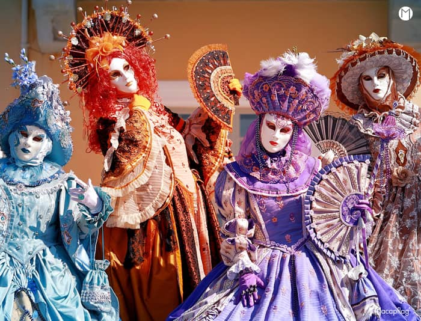
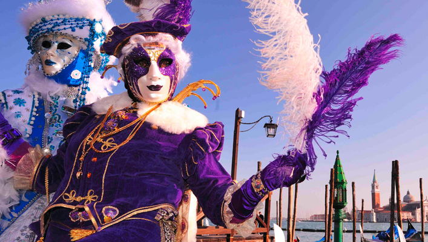

Le carnaval de Venise est une fête traditionnelle italienne remontant au Moyen Âge. Il commence dix jours avant le mercredi des Cendres et se poursuit jusqu'au mardi gras. Connu pour ses costumes et ses masques, il attire des foules considérables.

Des traces attestées du carnaval de Venise apparaissent dès le Xe siècle lors de spectacles publics les derniers jours précédant les mortifications du carême. En 1094, le carnaval est mentionné dans un édit du premier doge de Venise Vital Faliero de Doni[3]. Rituel civique, il sert initialement à façonner la cohésion civique et politique de la commune constituée de sestieri (quartiers) marqués par leur forte identité. Il est progressivement pris en main les siècles suivants par l'aristocratie qui canalise la fête mais continue à associer le peuple aux jeux publics (notamment la pyramide humaine appelée « Forces de Cul », la chasse aux porcs au XIIIe siècle, remplacée par la chasse aux taureaux au XVIe siècle, suivie d'une mise à mort et d'une distribution de viande), aux fêtes (épousailles du Doge avec la mer, fête des Maries remplacée à la fin du XIVe siècle par le jeudi gras marqué par le sacrifice rituel du taureau et de douze porcs), voulant ainsi par ces spectacles affirmer la puissance de sa cité.

Le but premier du carnaval de Venise était d’abolir les contraintes sociales habituelles. Le riche devenait pauvre et vice versa, les personnes qui se connaissaient bénéficiaient du privilège de ne plus avoir à se saluer grâce à l'incognito procuré par les masques apparus au XIIIe siècle. Le port du costume permettait une liberté inconnue pendant le reste de l'année, les individus pouvaient transgresser certaines règles sans se faire reconnaître. Institutionnalisé et « codifié » à la Renaissance, le carnaval s'ouvre à l'opéra à partir du XVIe siècle et accueille les princes d'Europe (auparavant le théâtre avec ses prix d'entrée réduits était plus populaire). C’est à partir du XVIIe siècle, à l'époque baroque, que le mythe du carnaval de Venise s’est répandu dans toute l'Europe, et c'est l'image du XVIIIe siècle qui nous est la plus familière grâce aux tableaux de Canaletto, Francesco Guardi, Giandomenico Tiepolo et surtout Pietro Longhi. Longtemps célébré entre l'Épiphanie et le Carême, il s'étend à cette époque pendant plusieurs mois de l'année, en hiver, en mai-juin et à l'automne (jusqu'à six mois dans l'année), sa démesure tentant à cette époque de masquer l'angoisse du déclin commercial et politique de Venise.